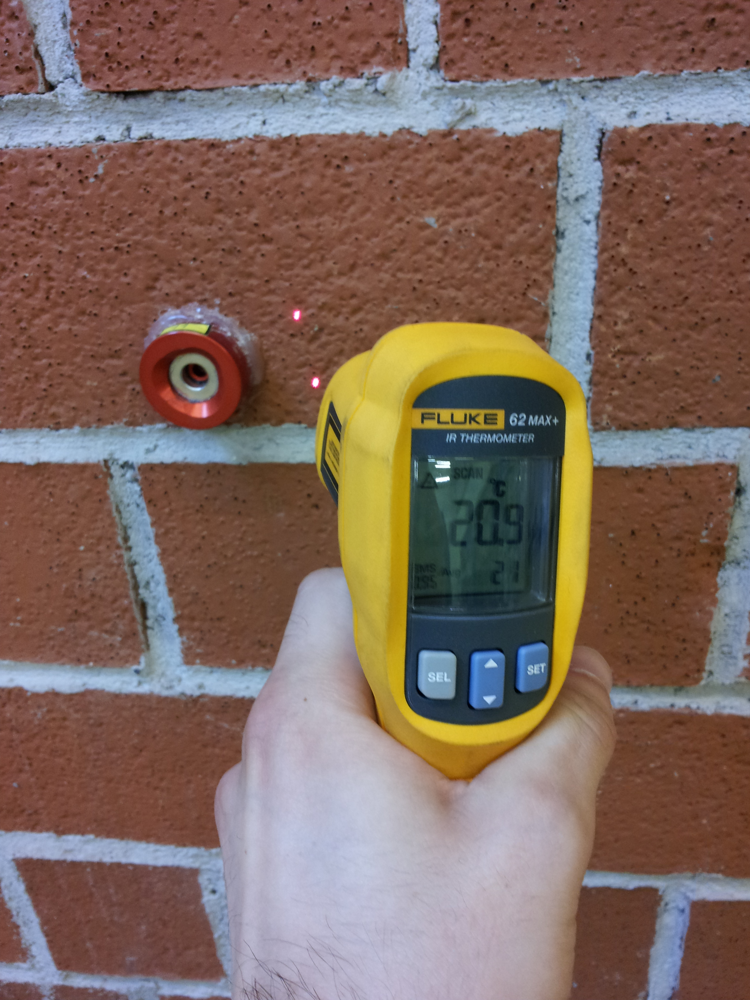
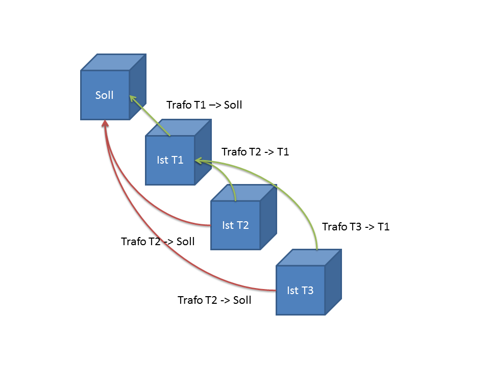
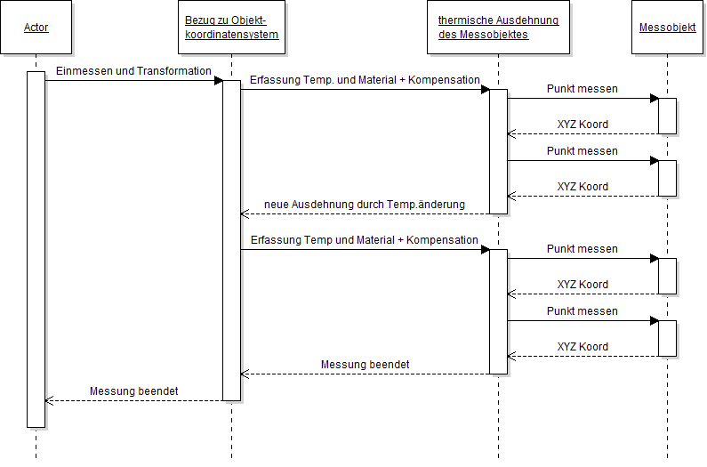

Präzisionsmessungen zur Fertigungs- und Qualitätskontrolle im Automobil-,
Flugzeug- und Schienenfahrzeugbau sind eine Hauptaufgabe der Industrievermessung.
Aufgrund der immer kleiner werdenden Toleranzen für die Werkstücke, ist eine Kompensation
der thermischen Ausdehnung unerlässlich.
Bis zu 75% der geometrischen Fehler von gefertigten Werkstücken sind auf thermische Einflüsse zurückzuführen.
Ein Verfahren zur Temperaturkompensation des Messobjekts ist zu entwickeln.
Die Umsetzung und Implementierung der Logik und Funktionalität des Verfahrens erfolgt in OpenIndy, eine Open- Source- Software für Industriemesssysteme.
Das Konzept des Verfahrens basiert auf der Recherche zu derzeitig verwendeten Verfahren der Temperaturkompensation in Anwendungen und
in kommerzeillen Softwarelösungen. Die Validierung des eigenen Verfahrens soll anhand einiger Testmessungen durchgeführt werden.
Die Entwicklung des Verfahrens soll gezielt in der Open- Source- Software geschehen, sodass die Funktionalität transparent und nachvollziehbar ist. Des weiteren
ist dadurch gegeben, dass das Verfahren für Spezialfälle angepasst und erweitert werden kann.
Die Funktionsweise des Verfahrens basiert auf einem eigenen Kriterienkatalog, der aus der Recherche aktueller Verfahren erstellt wurde. Zur Recherche wurden
verschiedene Anwendungen von Verfahren der Temperaturkompensation in mehreren verschiedenen Bereichen der Industrievermessung hernagezogen. Die Umsetzung des
Verfahrens mit den zuvor erarbeiteten Kriterien ergab 2 Möglichkeiten, um die thermische Ausdehnung des Messobjekts zu kompensieren.

Eines der Verfahren ermittelt die Ausdehnung des Messobjekts durch Angabe der Objekttemperatur, welche bestmöglich zu erfassen ist, und durch Festlegen
des Materials.
Aus der Differenz der aktuellen Objekttemperatur und der Referenztemperatur des Messobjekts, sowie dem zum Material gehörigen Ausdehnungskoeffizienten, lässt
sich der Ausdehnungsmaßstab ermittelt. Die Inverse dieses Maßstabs wird zur Kompensation verwendet.
Als alternative Möglichkeit kann die Ausdehnung des Objekts durch Transformationen erfasst werden. Diese Variante hat den Vorteil, dass Objekttemperatur und
Ausdehnungskoeffizient nicht bekannt sein müssen. Die Bestimmung der tatsächlichen Temperatur erschwert sich, da oft nur die Oberflächentemperatur gemessen werden kann.
Ebenso weichen die Annahmen des Materials und dessen Ausdehnungskoeffizienten oft von der Realität ab.

Die allgemeinen Transformationsparameter, um den Bezug zwischen Instrumentenkoordinatensystem und Objektkoordinatensystem herzustellen, sowie die zusätzlichen
Transoformationen zur Kompensation des thermischen Einflusses werden in einer Verkettung dargestellt. Alternativ könnte bei jeder Änderung der Temperatur
eine neue Einmessung durchgeführt werden.
Im Vergleich zu derzeitigen Verfahren wurde das entwickelte Verfahren um einen neuen Bezugspunkt zur Anwendung der Kompensation erweitert.
In der Literatur sind hinweise zu finden, dass derzeitige Verfahren eine Kompensation der Beobachtungen zum Koordinatenursprung durchführen. Das zu Grunde
liegende Modell ist jedoch nur in einigen Sonderfällen gültig.
Der erweiterte Bezugspunkt stellt den tatsächlichen Ausdehnungsursprung des Messobjekts dar. Alle Beobachtungen werden im Bezug zu diesem Punkt korrigiert.
Diese Erweiterung ermöglicht es das Objektkoordinatensystem beliebig in das Messobjekt zu legen, ohne Einfluss auf die Kompensation zu haben.
